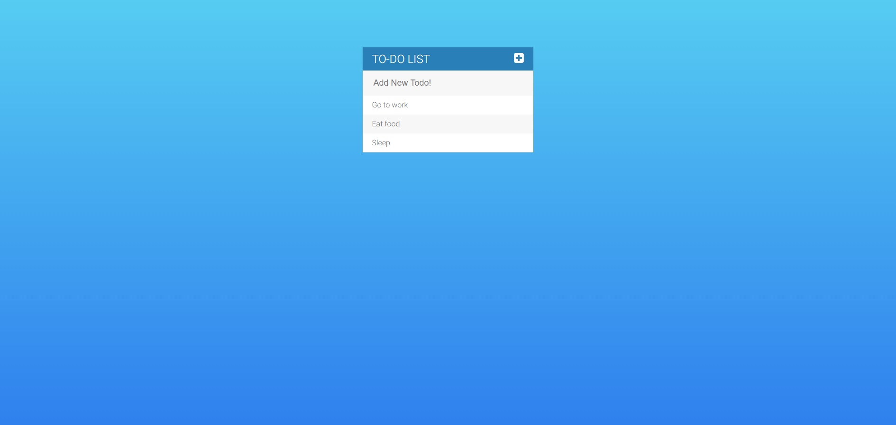

<div class="citation">"</div>
<div class="work-text">
<b>ToDo-List</b> Ett arbetsprov jag fick av ett företag. Provet löd ungefärligt: Skapa en att-göra-lista där man kan lägga till och ta bort objekt, provet görs med hjälp av jQuery.
<a class="site-link" target="_blank" rel="noopener noreferrer" href="/5">Klicka här</a> för att se projektet i sin helhet.</div>